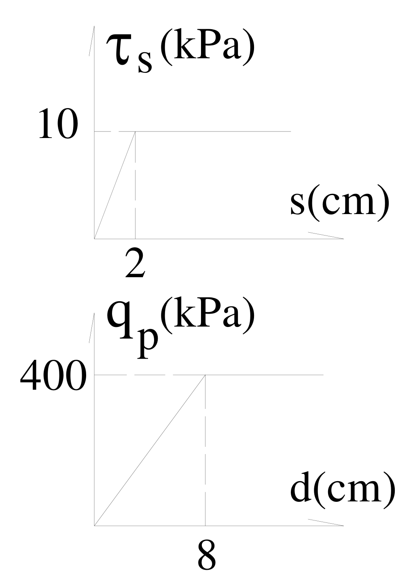
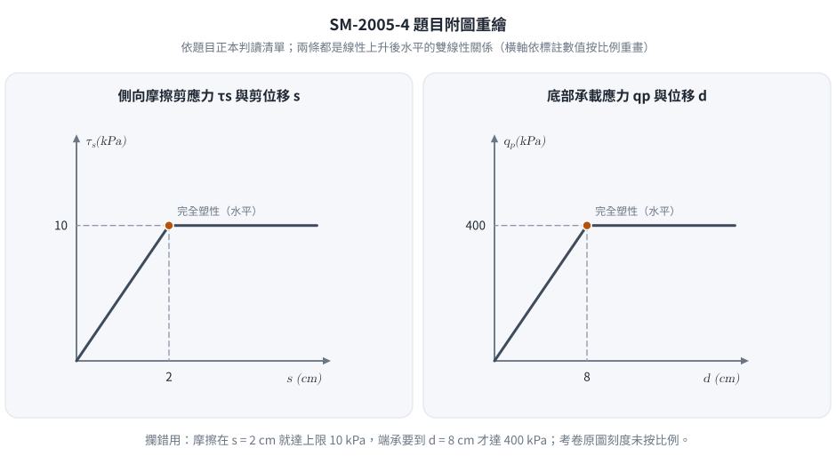
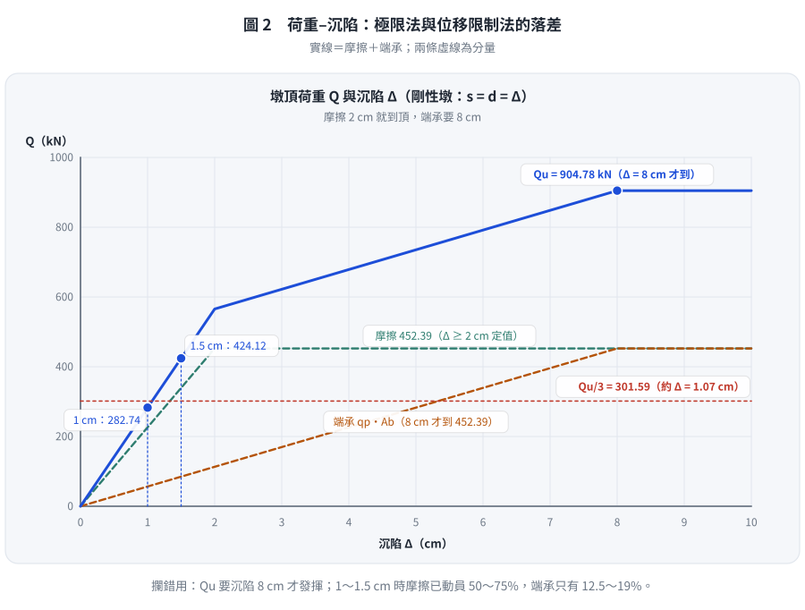

📄 題目正本：考卷原文・附圖・判讀清單（已確認）
SM-2005-4 題目正本
本檔只記錄考卷上寫了什麼、圖上畫了什麼，不含任何解法。解析見同資料夾
SM-2005-4.md。
判讀清單已確認（凍結）；本檔原則上不再修改（改動須回考卷原圖並記 log）。
| 項目 | 內容 |
|---|---|
| 考卷 | raw/exams/SM-2005_土壤力學與基礎設計.pdf 第 2 頁（背面），第四題 |
| 考年 | 民國 94 年（2005） |
| 配分 | 25 分（㈠5、㈡10、㈢10） |
| 附圖 | SM-2005-4-fig-2.png（τs–s 與 qp–d 兩張關係圖；2026-11-15 由考卷重新擷取 500 dpi）；既有 SM-2005-4-fig-1.png 為同一圖，左上角有滑鼠游標，保留不刪 |
| 判讀狀態 | 已確認（2026-11-15 關卡一：使用者授權依建議判讀確認；轉錄 2026-11-15；PyMuPDF 110 dpi 全頁目視，附圖 500 dpi 局部放大，附圖為向量線條、以 PDF drawings 座標核對；盲讀後才比對既有解析） |
1. 考卷原文（逐字）
四、有一墩基(pier)直徑為 1.2m，長度為 12m，平均側向摩擦剪應力 $\tau_s$ 與剪位移 s 關係、底部承載應力 $q_p$ 與位移 d 關係分別如右圖所示：
㈠利用極限載重支承力（ultimate load bearing capacity）求工作荷重（working load）。（5 分）
㈡利用位移限制為 1cm 與 1.5cm 分別求工作荷重。（10 分）
㈢試檢討前述兩種方法之適當性。（10 分）
2. 考卷給的公式、附表與參數
- 墩基：直徑 1.2 m、長度 12 m。
- 側向摩擦：平均側向摩擦剪應力 $\tau_s$ 與剪位移 $s$ 的關係（附圖上圖）。
- 底部承載：底部承載應力 $q_p$ 與位移 $d$ 的關係（附圖下圖）。
- 考卷沒有給公式。
- 沒有給：安全係數、墩身彈性模數（墩身是否視為剛體）、墩身自重、地層種類與單位重、地下水位、「工作荷重」在㈡是否還要再除安全係數。
- 卷首注意事項：不必抄題，作答時請將試題題號及答案依照順序寫在試卷上，於本試題紙上作答者，不予計分。可以使用電子計算器，但需詳列解答過程。
3. 附圖

圖面文字照錄：τs (kPa)、10、s(cm)、2、qp(kPa)、400、d(cm)、8。
4. 判讀清單
| # | 項目 | 判讀 | 圖上／題文依據 | 把握 |
|---|---|---|---|---|
| 1 | ㈡「工作荷重」是否再除安全係數 | 判讀為：墩頂位移達限制值（1 cm、1.5 cm）時對應的載重即為工作荷重，不再除安全係數 | 題文「利用位移限制…分別求工作荷重」；考卷未給安全係數 | 不確定（影響答案）；使用者授權依建議確認 |
| 2 | ㈠安全係數 | 考卷沒有給；須自行假設（一般取 FS = 2.5～3） | 全題無 FS | 確定（考卷沒有給） |
| 3 | 墩身剛性 | 考卷未給墩身彈性模數；判讀為剛性墩，墩身各處剪位移 $s$ 等於墩底位移 $d$ 等於墩頂沉陷 | 題文只給土壤–墩介面關係 | 確定（解讀） |
| 4 | τs–s 關係 | 由原點直線增至 $s$ = 2 cm、$\tau_s$ = 10 kPa，之後水平（完全塑性）；轉折點以虛線引到兩軸 | 附圖 500 dpi；PDF 座標：原點 (498.5, 267.9) → 轉折 (513.1, 229.7) → 水平至 568.6 | 確定 |
| 5 | qp–d 關係 | 由原點直線增至 $d$ = 8 cm、$q_p$ = 400 kPa，之後水平 | 附圖；PDF 座標：原點 (498.5, 370.0) → 轉折 (538.1, 316.3) → 水平至 580.1 | 確定 |
| 6 | 兩圖橫軸比例 | 圖上刻度未按比例（2 與 8 的位置非 1：4），數值以標註為準 | PDF 座標 2 在 +14.6 pt、8 在 +39.6 pt | 確定 |
| 7 | 摩擦作用範圍 | 「平均」側向摩擦剪應力 → 沿墩身全長 12 m 均勻作用 | 題文「平均」 | 確定（解讀） |
| 8 | 底部承載面積 | $q_p$ 作用於墩底全斷面（直徑 1.2 m 圓） | 題文 | 確定（解讀） |
| 9 | 所求 | ㈠依極限支承力求工作荷重；㈡位移限制 1 cm 與 1.5 cm 各求一個工作荷重；㈢比較兩法適當性（說明） | 題文 | 確定 |
| 10 | 考卷沒有給 | 安全係數、墩身 $E$、墩身自重、土層種類、地下水位 | 全題 | 確定 |
轉錄：2026-11-15（SM-U2-2 題目正本推廣・批 1）
確認：2026-11-15 使用者授權依建議判讀確認（SM-U2-2 題目正本推廣・批 1，關卡一；使用者指示「要我確認的請依你建議」）
考題編號：SM-2005-4
主分類： SM-U2-2 深基礎之支承力與沉陷量
副分類： 無
分析法： 混合
標籤： 墩基 樁基承載力 端點承載力 摩擦力 極限載重 位移限制 變形相容
1. 題目（考卷原文見題目正本）
考卷原文、公式／附表、附圖與判讀清單（已確認）見
SM-2005-4-problem.md。本節只列解題時最容易讀錯的地方與本解使用的記號；題意以題目正本為準。

重繪自考卷附圖，依題目正本判讀清單 #4–#6；攔下的判讀錯誤：摩擦在 2 cm 就達上限、端承要 8 cm 才達上限，考卷原圖刻度未按比例。
常見誤讀
| 項目 | 正確判讀 | 常見誤讀 |
|---|---|---|
| ㈡的工作荷重 | 位移達 1 cm、1.5 cm 時對應的荷重就是工作荷重，不再除安全係數（題目正本 #1，已確認） | 再除一次 FS，或把位移限制當成極限狀態 |
| ㈠的安全係數 | 考卷沒給，須自行假設並寫明（#2） | 以為題目給了 FS |
| 墩身剛性 | 考卷沒給墩身 $E$，視為剛性墩：$s=d=$ 墩頂沉陷（#3） | 以為摩擦與端承的位移各自獨立 |
| 摩擦作用範圍 | 「平均」側向摩擦 → 沿墩身全長 12 m 均勻作用（#7） | 只算部分長度 |
本解記號： $\tau_s$ 平均側向摩擦剪應力；$q_p$ 底部承載應力；$s$、$d$ 剪位移與墩底位移；$Q_u$ 極限載重；$Q_{all}$ 工作荷重。
2. 考題核心精神與出題者意圖 (Core Concepts & Examiner's Intent)
本題旨在測驗考生對於深基礎「承載力發揮機制」與「變形相容（Strain Compatibility）」的理解。
傳統的極限載重法是將極限側向摩擦力與極限端承力直接相加，再除以整體安全係數，但忽略了兩者要達到極限所需的變形量（位移）差異極大（通常側摩擦只需極小位移即可發揮，而端承力需要較大位移）。
出題者藉由給定荷重－位移曲線，要求考生利用變形限制（容許沉陷量）來反求工作荷重，並比較這兩種設計哲學的優劣與適當性，突顯以「位移控制」進行深基礎設計的重要性。
3. 解題戰略地圖與陷阱分析 (Strategic Roadmap & Trap Analysis)
戰略地圖：
- (一) 極限載重法：
- 從圖中讀取極限剪應力 $\tau_{s,max} = 10\text{ kPa}$ 與極限端承應力 $q_{p,max} = 400\text{ kPa}$。
- 計算樁身側面積 $A_s$ 與端面積 $A_p$。
- 計算極限承載力 $Q_u = \tau_{s,max} A_s + q_{p,max} A_p$。
- 除以安全係數 $FS$ (通常取 $FS=3$) 得到工作荷重 $Q_{all}$。
- (二) 位移限制法：
- 假設樁為剛體，各部位向下位移量 $\Delta = s = d$。
- 由圖形推導線性段方程式：$\tau_s = (10/2)s = 5\Delta$ 及 $q_p = (400/8)d = 50\Delta$。
- 分別代入 $\Delta = 1\text{ cm}$ 及 $\Delta = 1.5\text{ cm}$ 計算當時發揮的 $\tau_s$ 與 $q_p$。
- 計算對應之工作荷重。
- (三) 適當性檢討：
- 比較兩種方法的物理意義（是否考慮變形相容），並闡述為何後者較合理。
陷阱分析：
- 安全係數的假設： 題目在第(一)小題並未明確給定安全係數 $FS$，考生須自行假設合理值（如 $FS=3$）並寫出假設前提。
- 剛體假設： 第(二)小題須假設墩基本身為剛體（忽略彈性壓縮變形），才能認定側向剪位移 $s$ 與底部端點位移 $d$ 相等。
- 單位換算： 計算 $\tau_s$ 與 $q_p$ 的函數關係時要注意位移單位是 $\text{cm}$，而面積使用 $\text{m}^2$，算出的承載力單位為 $\text{kN}$。
3.5 變數層次分析 (Variable Hierarchy Analysis)
最終目標
分別利用極限承載力與位移限制求取樁之工作荷重，並評估兩方法之合理性。
本題關鍵公式（依計算順序）
極限承載力：
$$ Q_u = \tau_{s,max} (\pi D L) + q_{p,max} \left(\frac{\pi}{4} D^2\right) $$
工作荷重（極限法）：
$$ Q_{all} = \frac{\boxed{Q_u}}{FS} $$
應變相容下之承載力（位移 $\Delta$）：
$$ Q(\Delta) = \tau_s(\Delta) \cdot (\pi D L) + q_p(\Delta) \cdot \left(\frac{\pi}{4} D^2\right) $$
L1：題目直接給定
| 符號 | 數值 | 說明 |
|---|---|---|
| $D$ | $1.2 \text{ m}$ | 墩基直徑 |
| $L$ | $12 \text{ m}$ | 墩基長度 |
| $\tau_{s,max}$ | $10 \text{ kPa}$ | 側向極限摩擦應力 (發揮位移 $2\text{cm}$) |
| $q_{p,max}$ | $400 \text{ kPa}$ | 底部極限端承應力 (發揮位移 $8\text{cm}$) |
L2：需知識點推導
1. 幾何參數計算
| 符號 | 公式／來源 | 卡關? |
|---|---|---|
| $A_s$ | $A_s = \pi D L$ | |
| $A_p$ | $A_p = \frac{\pi}{4} D^2$ | |
2. 承載力隨位移之函數
| 符號 | 公式／來源 | 卡關? |
|---|---|---|
| $\tau_s(\Delta)$ | 當 $\Delta \le 2\text{ cm}$，$\tau_s = \frac{10}{2}\Delta$ | |
| $q_p(\Delta)$ | 當 $\Delta \le 8\text{ cm}$，$q_p = \frac{400}{8}\Delta$ | |
L3：深層知識（不懂就卡住）
| 知識點 | 說明 | 卡關? |
|---|---|---|
| 變形相容 (Strain Compatibility) | 樁身各點在不同深度或介面產生的位移，對應激發出不同程度的土壤剪力。忽略自身壓縮變形時，全樁位移量一致。 | |
| 整體安全係數之局限 | 傳統 $FS$ 無法反映摩擦力與端承力在同一工作位移下發揮程度不同的事實。 |
4. 步驟化詳細計算過程 (Step-by-Step Detailed Calculation)
(一) 利用極限載重支承力求工作荷重
-
計算樁側面積與端面積：
$$ A_s = \pi \cdot D \cdot L = \pi \cdot 1.2 \cdot 12 = 14.4\pi \text{ m}^2 \approx 45.239 \text{ m}^2 $$
$$ A_p = \frac{\pi}{4} \cdot D^2 = \frac{\pi}{4} \cdot (1.2)^2 = 0.36\pi \text{ m}^2 \approx 1.131 \text{ m}^2 $$ -
計算極限支承力 $Q_u$：
由圖中讀出：極限側摩擦應力 $\tau_{s,max} = 10 \text{ kPa}$，極限端承應力 $q_{p,max} = 400 \text{ kPa}$。
$$ Q_u = Q_{s,max} + Q_{p,max} = \tau_{s,max} A_s + q_{p,max} A_p $$
$$ Q_u = 10 \times 14.4\pi + 400 \times 0.36\pi = 144\pi + 144\pi = 288\pi \text{ kN} $$
$$ Q_u \approx 904.78 \text{ kN} $$ -
求工作荷重 $Q_{all}$：
題目未給定安全係數 $FS$，依一般深基礎設計慣例，通常取 $FS = 3$。
$$ Q_{all} = \frac{Q_u}{FS} = \frac{288\pi}{3} = 96\pi \text{ kN} \approx \boxed{301.59 \text{ kN}} $$
(註：若取 $FS=2.5$，則為 $361.91 \text{ kN}$，一般建議明列所假設之 $FS$ 值。)
(二) 利用位移限制求工作荷重
假設墩基本身為剛體（忽略樁身彈性壓縮變形），則樁側剪位移 $s$ 與底部位移 $d$ 皆等於總沉陷位移 $\Delta$。
由題意線性關係可得應力函數：
- 側摩擦：$\tau_s(\Delta) = \frac{10}{2} \cdot \Delta = 5\Delta \text{ (kPa)}$ ，其中 $\Delta \le 2\text{ cm}$
-
端承力：$q_p(\Delta) = \frac{400}{8} \cdot \Delta = 50\Delta \text{ (kPa)}$ ，其中 $\Delta \le 8\text{ cm}$
-
位移限制為 $\Delta = 1\text{ cm}$ 時：
$$ \tau_s = 5 \times 1 = 5 \text{ kPa} $$
$$ q_p = 50 \times 1 = 50 \text{ kPa} $$
對應之工作荷重：
$$ Q_1 = \tau_s A_s + q_p A_p = (5 \times 14.4\pi) + (50 \times 0.36\pi) $$
$$ Q_1 = 72\pi + 18\pi = 90\pi \text{ kN} \approx \boxed{282.74 \text{ kN}} $$ -
位移限制為 $\Delta = 1.5\text{ cm}$ 時：
$$ \tau_s = 5 \times 1.5 = 7.5 \text{ kPa} $$
$$ q_p = 50 \times 1.5 = 75 \text{ kPa} $$
對應之工作荷重：
$$ Q_{1.5} = \tau_s A_s + q_p A_p = (7.5 \times 14.4\pi) + (75 \times 0.36\pi) $$
$$ Q_{1.5} = 108\pi + 27\pi = 135\pi \text{ kN} \approx \boxed{424.12 \text{ kN}} $$

圖 2 荷重–沉陷曲線。極限載重要沉陷 8 cm 才發揮，位移限制 1～1.5 cm 時摩擦已動員五到七成、端承不到兩成；攔下「把 $Q_{s,max}$ 與 $Q_{p,max}$ 當成同時發生」的錯誤，也可直接看出㈠、㈡兩法的數值關係。
(三) 試檢討前述兩種方法之適當性
- 極限載重法（方法一）：
- 缺點： 此法將最大的摩擦力與端承力直接相加作為極限承載力。然而，從題圖可知，摩擦力發揮到極限僅需 $2\text{ cm}$ 位移，端承力發揮到極限卻需 $8\text{ cm}$ 位移。當基礎位移達到 $8\text{ cm}$ 時，側向土壤極可能已進入大變形破壞（甚至軟化/殘餘強度狀態）；而在工作荷重下，也無法保證樁的實際變形會落在結構容許的沉陷量內。
-
適當性： 較不適當。該法忽略了樁周土壤與端部土壤的「變形相容性（Strain Compatibility）」，可能高估了工作狀態下的實際安全度或導致過大的變形。
-
位移限制法（方法二）：
- 優點： 這種方法（或稱荷重—沉陷法）在給定同一位移時，計算各部分實際能激發的抵抗力。如此不僅確保了變形相容，也直接控制了工程結構最關心的「沉陷量」。
- 適當性： 較為適當且符合實務精神。在實際基礎設計中，結構物的容許沉陷量往往是控制設計條件的關鍵。根據地質參數建立荷重-位移曲線，再由容許沉陷量反推安全的工作荷重，能確保上部結構在長期使用下不會發生因變形過大而破壞的情況。
5. 關鍵爭議點與進階探討 (Critical Issues & Advanced Discussion)
- 整體安全係數與部分安全係數： 在極限載重法中，由於摩擦力與端承力的位移特性相差懸殊，有些規範會要求分別採用不同的安全係數，例如對端承力取較高的 $FS$（如 $FS_p=3$），對側摩擦取較低的 $FS$（如 $FS_s=1.5$ 或 $2$），再進行加總。此種考量稍微彌補了傳統極限法的缺陷。
- 樁身壓縮量的影響： 本題計算位移限制時，隱含了「樁基為剛體（Rigid Body）」的假設。但在實際深且長的樁基礎中，樁身受到載重會產生顯著的彈性壓縮變形（Elastic Shortening），導致樁頂的位移大於樁底的位移（$s \ne d$ 且隨深度變化）。實務上常使用 $t-z$ 曲線（側向荷重-位移）及 $Q-z$ 曲線（端部荷重-位移）進行有限差分分析，以得到更精確的沉陷量評估。
- ㈠安全係數為假設值（2026-11-15 盲解比對補註）：考卷未給 FS。本解取 $FS=3$（$Q_{all}$ = 301.59 kN）；取 $FS=2.5$ 為 361.91 kN、$FS=2$ 為 452.39 kN，作答時須寫明所採 FS。由㈡的勁度（剛性墩、$\Delta\le2$ cm 時約 282.74 kN/cm）反算，$Q_u/3$、$Q_u/2.5$ 對應的墩頂沉陷約 1.07 cm、1.28 cm，與㈡的位移限制同量級，兩法可互相檢核。
修正日期：2026-11-15（§1 改為指向題目正本 SM-2005-4-problem.md，重繪附圖 figs/SM-2005-4-fig-1-problem.svg；§5 補註 FS 假設與替代值（盲解比對後補充，答案未變）；§4（二） 補解題圖解 figs/SM-2005-4-fig-2-load-settlement.svg；非勘誤）